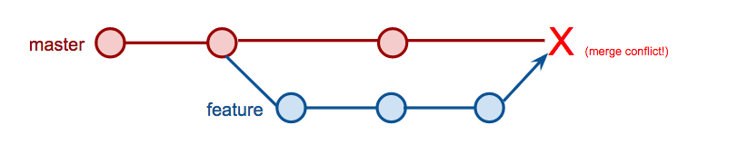

Intro to Git
teaching-materials.org/git
Welcome!
What we will cover in this workshop
- Short recap of command line
- What is version control and why should we care?
- Basics of Git: the essential commands
If it seems hard, it's because it is

"The version control system that was ... designed to make you feel less intelligent" (source)
Installation and Setup
Installation and Setup
Setup name and email in gitconfig
$ git config --global user.name "Your Name Here"
# Sets the default name for Git to use when you commit
$ git config --global user.email "your_email@example.com"
# Sets the default email for Git to use when you commit
$ git config --list
Setup: Setting the default text editor
By default Git is set up to use Vim as the text editor.
(esc + :q or :q! to get out of Vim)Follow these instructions to change your default text editor to whatever you prefer.
Setup!

BONUS LEVEL: Set up your GitHub account and authentication from Git.
Command Line Recap
Common commands
cd: change directoryls: list all the filesmkdir: make directoryrmdir: remove/delete directorytouch: create a filerm: remove a filepwd: find out the file path of current directory you are in, from the root
terminology note: directory === folder
cd (changing directories)
A little further explanation...
cd folder_name: moves down into the folder
example: cd my_kittens
cd path_name: moves down into the last folder listed
example: cd my_kittens/fuzzball/favorite_foods
cd ..: moves up one foldercd ../../../: moves up three folderscd ~: moves to the root directory, no matter where you are
Watch me!
Goal: Create a folder named kittens_example_project on my desktop
Exercise - Do it on your own!
- Use the command line to navigate to your desktop folder
- Create a folder called kittens_project
- Move to inside of kittens_project folder
- Check to see what is your current file path!
Potential solution
- Use the command line to navigate to your desktop folder
- Create a folder called kittens_project
- Move to inside of kittens_project folder
- Check to see what is your current file path!/li>
$ pwd
$ cd Desktop
$ mkdir kittens_example_project
$ cd kittens_example_project
What is version control?
Version control is a tool that allows you to...
Collaborate
Create anything with other people, from academic papers to entire websites and applications.
Track and revert changes
Mistakes happen. Wouldn't it be nice if you could see the changes that have been made and go back in time to fix something that went wrong?
You already manage versions of your work!
Do you have files somewhere that look like this?
Resume-September2016.docx
Resume-for-Duke-job.docx
ResumeOLD.docx
ResumeNEW.docx
ResumeREALLYREALLYNEW.docx
Types of Version Control Systems
Centralized Version Control

One central server, each client (person) checks out and merges changes to main server
Examples: CVS, Subversion (SVN), Perforce
Distributed Version Control

Each client (person) has a local repository, which they can then reconcile with the main server.
Examples: Git, Mercurial
Why Use Git?
- Fast! Access information quickly and efficiently.
- Distributed! Everyone has her own local copy.
- Scalable! Enables potentially thousands (millions!) of developers to work on single project.
- Local! You don't need a network connection to use it. You only need a remote server if you want to share your code with others (e.g., using GitHub).
- Branches! Keep your coding experiments separate from code that is already working.
- Everyone has a local copy of the shared files and the history.
What is a repository (repo)?
Essentially, a Git version of project folder.
Git will track any changes inside of a repository.
Create a Local Repository - Do it with me!
1. Make sure you are inside of your kittens_example_project
$ pwd
2. Initialize it as a local Git repository
$ git status
# should say 'command git not found because we haven't made it a repository yet!
$ git init
$ git status
Woah, what did we just do?
git init will transform any folder into a Git repostiory.
You can think of it as giving Git super powers to a folder so that Git starts tracking any changes in that folder.If the command git status returns no errors, it means your folder has successfully been Git-ified!
Good repository practices
- repos are meant to be self encapsulating project folders. 'Project' can be how you define it - one html page or a whole app
- It's a good idea to name folders with lowercase and with no spaces - use dashes or underscores instead
- WARNING NOTE: Do not put a repo inside of a repo. Git will get confused and have no idea what changes to track
Add files - Do it with me!
1. Create a new file in your new folder named kitten.txt
$ touch kitten.txt
2. Check the status of your repo with git status
$ git status
3. Tell Git to track our new file with git add
$ git add kitten.txt
$ git status
Success! The file you just added is now tracked by Git
Changes and commits
1. Open kitten.txt, add some text, and save it
$ git status
2. Stage the change and check the status
$ git add kitten.txt
$ git status
3. Commit the change with a good commit message that explains and describes what you did
$ git commit -m "First commit. Added kitten.txt to repository."
Whoa.
What did we just do??
How is all this different from just saving a file?
- When we add a new file, we tell Git to add the file to the repository to be tracked.
- This is also called staging a file. We can see our changes in the staging area (aka the index, aka the cache), ready to be saved.
- A commit saves the changes made to a file, not the file as a whole. The commit will have a unique ID so we can track which changes were committed when and by whom.
In other words...
...a commit is like a snapshot of your project at a current time
Look at your progress
$ git log
commit 6853adc0b6bc35f1a8ca0a6aa5e59c978148819b
Author: Your name <you@your-email.com>
Date: Tues May 23 16:01:22 2017 -0700
First commit. Added kitten.txt to repository.
Congratulations.
You are now using Git.

When to commit?
- Commit early and often!
- When you have completed a mini 'idea' or 'task':
- You got a function to work!
- You corrected a few misspellings
- You added some images
- IMPORTANT NOTE: Commit when your code works! Try not to commit broken code
Good commit messages
Include a descriptive but succinct message of the changes you have made, in the present tense
$ git commit -m "Add capitalization function for header text"
Main point is: other people need to be able to read your commit history and understand what you were accomplishing at each step of the way
Article: Art of the commitQuick review
- git init: turns a folder into a Git repository
- git status: checks the status of your files
- git add file_name: adds file to the staging area
- git commit -m "your commit message": commits your changes
- git log: see your commits so far
Exercise in Commitment - Do It Yourself!
Click here for the exercise!The Magical Realms of Git

The Workspace
Working Tree
What you see in your editor and where you make your changes
The Staging Area
Index / Cache
A snapshot of your working tree at a particular point in development
lets you gather changes for the next commit
Your Local Repo
Your copy of a project, initialized as a Git repository
(i.e., it has a .git directory)
The Remote Repo
The shared copy of the repo that lives on a remote server
Very often this is GitHub, but it doesn't have to be.
Conventionally named origin but doesn't have to be.
It's all about the history
What should I use version control for?
Anything. But not everything.
Gitignore
You decide what goes into version control.You can, and should, leave some things out.
libraries, .dotfiles, api keys...
The.gitignore file at the root of your project directory
Check out gitignore.io for some suggestions.
We all make mistakes
Don't worry. Git is your friend.
Undoing changes in your working copy
If you haven't added/committed yet
Open kitten.txt and make some changes or add something new. Then:
$ git checkout kitten.txt
Look at kitten.txt in your editor: your changes are gone (you've gone back to the previous commit state).
Un-staging a file
- In your text editor, create a new file, and name it possum.txt
- Switch back to your terminal.
$ git add possum.txt
$ git status
$ git reset possum.txt
$ git status
The file is removed from staging, but your working copy will be unchanged.
Undoing changes you've already staged
Open kitten.txt in your editor and add some new text.
$ git add kitten.txt
$ git reset HEAD kitten.txt
$ git status # the file has been unstaged.
$ git checkout kitten.txt
# resets the working copy to its state at the last commit
Now look at the same file in your editor again: your changes are gone, and the file is removed from staging.
Er, what if I already committed it?
Undoing committed changes
Git lets you go back to any previous commit.
Open kitten.txt and add some new text
$ git add kitten.txt
$ git status
$ git commit -m "Make a change I will soon regret making"
$ git log --oneline
# you should see (at least) two commits here at this point
# copy the short form of the hash id
Soft reset
Undoing just the commit
$ git reset --soft 53d23c4
$ git log --oneline
Notice that the commit is gone from your log, but your changes are still in your editor.
Hard reset
Undoing the commit AND the changes
$ git reset --hard 53d23c4
$ git log --oneline
Notice that the commit is gone from your log, AND your changes are removed in your editor.
Branching
A branch is essentially another copy of your repo that will allow you to isolate changes and leave the original copy untouched. You can later choose to combine these changes in whole or part with the "master" copy, or not.
Branches are good for features!
Branching

Branching
- Develop different code on the same base
- Conduct experimental work without affecting the work on master branch
- Incorporate changes to your master branch only if and when you are ready...or discard them easily
Branches are cheap!
Branching
Create a new branch called feature
$ git checkout -b feature
Add new lines to kitten.txt
$ git add kitten.txt
$ git commit -m "Adding changes to feature"
$ git log --oneline
Branching
What we just did, in picture form:
Branching
Switching branches
See all your local branches. Your active branch, the one you're "on," is marked with an *
$ git branch
Switch to master branch and look at the commit history
$ git checkout master
$ git log --oneline
Switch to feature branch and look at the commit history
$ git checkout feature
$ git log --oneline
Merging
Merge to get changes from one branch into another
Switch to master and merge changes
$ git checkout master
$ git merge feature
$ git log --oneline
Merging Branches
When you merge, you create a new commit on the branch you just merged into

What could possibly go wrong?

What is a merge conflict?

what a merge conflict looks like
You will see this in the affected file your text editor
Here are lines that are either unchanged from the common ancestor,
or cleanly resolved because only one side changed.
<<<<<<< yours:sample.txt
Your changes are reflected here in this section.
=======
Their changes are here in this section, in conflict with yours.
>>>>>>> theirs:sample.txt
And here is another line that is cleanly resolved or unmodified.
Merging
Merge conflicts
Change the first line in kitten.txt in master branch
$ git add kitten.txt
$ git commit -m "Changing kitten in master"
Now change the first line in kitten.txt in feature branch
$ git checkout feature
# open kitten.txt and change the first line
$ git add kitten.txt
$ git commit -m "Changing kitten in feature"
Merging
Merge conflicts, cont.
Merge the changes from master into the feature branch
$ git merge master #remember, you are on the feature branch here
You will be notified of a conflict. Go to the file in your editor and fix the problem. Then add and commit your edits.
Merging
The merge conflict occurred because the feature branch (which is based off of master) both had divergent histories for the same file.
The big picture

Git has its own Vocabulary
- A repository is where you keep all the files you want to track.
- A branch is the name for a separate line of development, with its own history.
- A commit is an object that holds information about a particular change.
- HEAD refers to the most recent commit on the current branch.
Some Basic Git Commands
- init
- add
- commit
- status
- log
- branch
- checkout
- fetch
- merge
- pull
- push
- clone